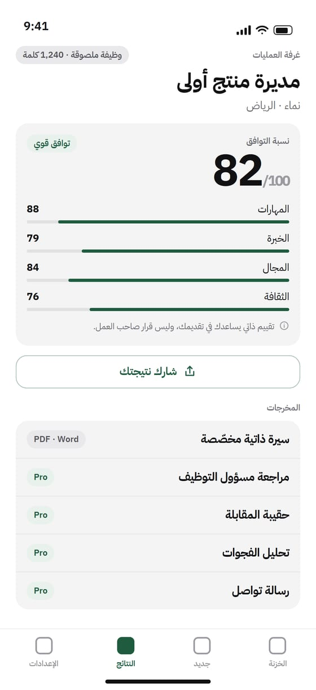

ابنِ سجلّك المهني مرة واحدة، والصق أي إعلان وظيفة. يبحث Fitt عن الشركة والوظيفة، ثم يجهّز لك سيرة مفصّلة وتحضيرًا للمقابلة — وكل سطر يرجع لخبرتك الحقيقية.
آيفون وآيباد · عربي وإنجليزي · English

سجّل إنجازاتك ومشاريعك وشهاداتك مرة واحدة. خزنتك محفوظة على الآيفون؛ ومع كل تحليل يُرسل فقط إعلان الوظيفة والأجزاء المطابقة من خزنتك (بعد موافقتك) — ولا يُحتفظ بها.
يقرأ Fitt عن الشركة وأخبارها والوظيفة من مصادر حيّة — وكل معلومة بمصدرها.
نسبة توافق واضحة مع التفصيل، وفجواتك أمام الوظيفة، وأصدق طريقة لسدّ كل فجوة.
سيرة متوافقة مع أنظمة ATS (PDF أو Word)، ومراجعة مسؤول التوظيف، وحقيبة مقابلة بإجابات STAR ونصوص للتفاوض على الراتب، ورسالة تواصل ونبذة LinkedIn.
كل سطر يرجع لخبرتك الحقيقية — اضغط «لماذا هذا السطر؟» لترى مصدره.
سيرة احترافية باللغتين، مع دعم كامل للكتابة من اليمين لليسار.